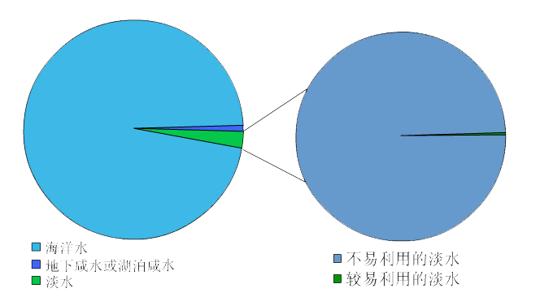

全球水资源现状
由于海水淡化技术还未成熟、普及，同时，在地球上的淡水资源中，分布在南北两极地区 的固体冰川及永冻土底冰是目前人类尚不能利用的，另外，在地下淡水中，由于它们非常 分散，而且绝大部分埋藏很深，因此，只有很少一部分浅层水可供人类利用。目前人类较 易利用的淡水资源仅占全球淡水资源的0.3%，仅占全球总储水量的十万分之七。
全球淡水资源不仅短缺而且地区分布极不平衡。按地区分布，巴西、俄罗斯、加拿大、中 国、美国、印度尼西亚、印度、哥伦比亚和刚果9个国家的淡水资源占世界淡水资源的60% ，而约占世界人口总数40%的80个国家和地区的人口面临淡水不足，其中26个国家的3亿人 口完全生活在缺水状态。预计到2025年，全世界将有30亿人口缺水，涉及的国家和地区达 40多个。

21世纪水资源正在变成一种宝贵的稀缺资源，水资源问题已不仅仅是资源问题，更成为关 系到国家经济、社会可持续发展和长治久安的重大战略问题。 本世纪以来，随着人口膨胀 与工农业生产规模的迅速扩大，全球淡水用量飞快增长。从1900－1975年，世界农业用水 量增加了7倍，工业用水量增加了20倍，并且近几十年来，用水量正以每年4%－8%的速度 持续增加，淡水供需矛盾日益突出。
我国水资源现状
中国水资源总量为2.8万亿立方米。其中地表水2.7万亿立方米，地下水0.83万亿立方米, 由于地表水与地下水相互转换、互为补给，扣除两者重复计算量0.73万亿立方米，与河川 径流不重复的地下水资源量约为0.1万亿立方米。按照国际公认的标准，人均水资源低于 3000立方米为轻度缺水；人均水资源低于2000立方米为中度缺水；人均水资源低于1000立 方米为重度缺水；人均水资源低于500立方米为极度缺水。中国目前有16个省(区、市)人 均水资源量(不包括过境水)低于严重缺水线，有6个省、区(宁夏、河北、山东、河南、山 西、江苏)人均水资源量低于500立方米，为极度缺水地区。

中国水资源分布的主要特点是：
总量并不丰富，人均占有量更低。中国水资源总量居世界第六位，人均占有量为2240立方米，
约为世界人均的1/4，在世界银行连续统计的153个国家中居第88位。
地区分布不均，水土资源不相匹配。长江流域及其以南地区国土面积只占全国的36.5%，其水
资源量占全国的81%；淮河流域及其以北地区的国土面积占全国的63.5%，其水资源量仅占全
国水资源总量的19%。
年内年际分配不匀，旱涝灾害频繁。大部分地区年内连续四个月降水量占全年的70%以上，连
续丰水或连续枯水较为常见。